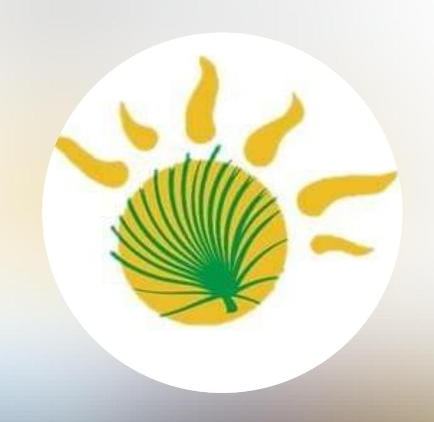

AIRE LIBRE
Naturaleza y senderos
Arroyo, sierras, palmeras Caranday y rincones para disfrutar del paisaje.
Explorar ubicaciones
PapagayosDIGITAL · SAN LUISCOSTA DE LOS COMECHINGONES · SAN LUIS
Naturaleza, cultura y servicios para disfrutar el destino con más información y autonomía.
UN DESTINO PARA DESCUBRIR
Un pueblo serrano donde los paisajes, las tradiciones y la hospitalidad invitan a bajar el ritmo y explorar.
Arroyo, sierras, palmeras Caranday y rincones para disfrutar del paisaje.
Explorar ubicacionesCelebraciones populares, tradición gaucha y encuentros que reúnen a la comunidad.
Conocer las fiestasConocé la identidad local, sus relatos, la gastronomía y el patrimonio cultural.
Descubrir historiasPLANIFICÁ TU VISITA
Una guía de referencia para encontrar lo que necesitás. Los datos se irán completando y verificando con el relevamiento local.
Opciones para descansar y prolongar tu estadía.
Fichas en preparaciónSabores serranos, comidas regionales y propuestas locales.
Fichas en preparaciónConsultá opciones y planificá recorridos con información confiable.
Datos por validarFechas tradicionales y encuentros culturales de la localidad.
Ver agendaORIENTATE EN EL DESTINO
Explorá los puntos registrados y filtrá por tipo de lugar. Confirmá la información antes de iniciar un recorrido.
TRADICIONES QUE NOS UNEN
Celebraciones mencionadas en la información del sitio. Confirmá las fechas de cada edición antes de viajar.
Misa, procesión, tradición gaucha y encuentro comunitario.
Música, danza, destrezas gauchas, comidas típicas y artesanías.
INFORMACIÓN PARA VIAJAR MEJOR
Encontrá respuestas iniciales y accesos a la información útil. Este prototipo no reemplaza los canales oficiales ni los servicios de emergencia.
Contactar TurismoUsá el mapa para ubicar puntos de interés y abrí cada marcador para ver su nombre.
Los teléfonos oficiales deben verificarse antes de publicarse. Ante una emergencia, recurrí a los servicios oficiales disponibles en la localidad.
Asistente local de demostración; no usa IA ni consulta datos en tiempo real.
ESTAMOS PARA ORIENTARTE
Consultá los canales publicados por Turismo y la Municipalidad. Antes de usar esta web como portal oficial, revisaremos los datos y permisos de cada enlace.
WhatsApp Turismo